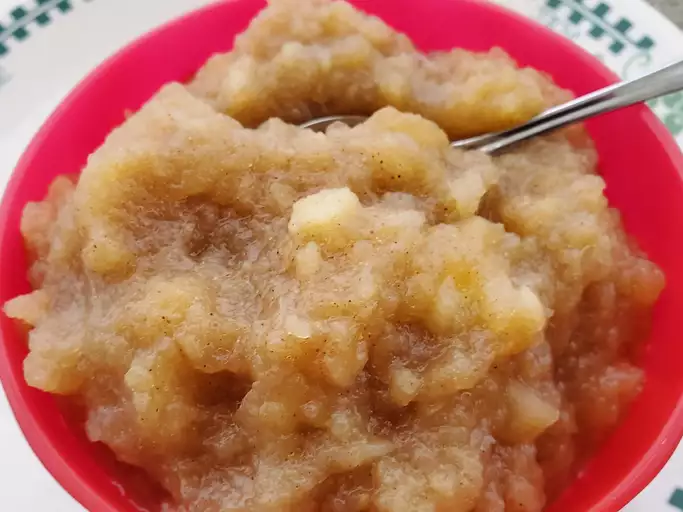

APPLESAUCE

An easy, quick applesauce recipe. I have doubled it and canned it so we always
have some on hand. My family loves it.
Ingredients
- 6 cups apples - peeled, cored and chopped
- ¾ cup water
- ⅛ teaspoon ground cinnamon
- ⅛ teaspoon ground cloves
- ½ cup white sugar
Steps
- In a 2 quart saucepan over medium heat, combine apples, water, cinnamon, and cloves.
Bring to a boil, reduce heat, and simmer 10 minutes. Stir in sugar, and simmer 5 more minutes.